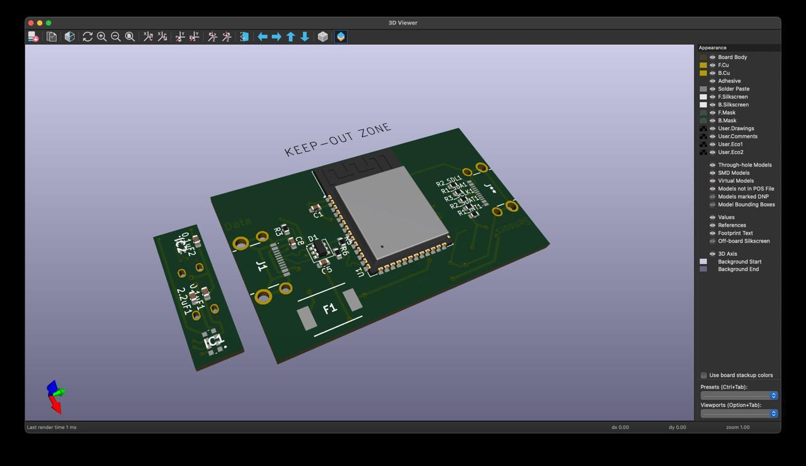

×
Melodoodle
Overview: Melodoodle is an interactive educational game designed to stimulate children's creativity through music. The heart of the project is the wearable device that translates movements into sounds, allowing children to "draw melodies." The piano-shaped packaging and comic-style instruction manual complete the game, making it engaging and fun.
Reflection: Melodoodle was a project that allowed me to combine my passion for drawing and design with a more technical and hands-on approach, working closely with a team. From the very beginning, I actively contributed to the project's aesthetics, from creating the initial sketches to the final packaging. I designed a piano-shaped box that would capture the child's attention while being functional to contain all the game elements. At the same time, I worked on developing the comic-style instruction manual, designed to help parents explain the game in a simple and fun way.
From a user perspective, I actively participated in research, conducting interviews with parents and children. This helped me understand how important it is to design with real people's needs in mind, not just focusing on the product's aesthetics. For this reason, I proposed the inclusion of collaborative modes, as social interaction turned out to be a key element for engaging children.
I am very satisfied with the work done on Melodoodle. The project successfully combined aesthetics, functionality, and a strong connection with the end user.
